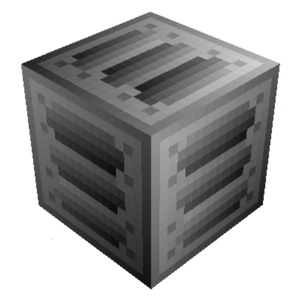
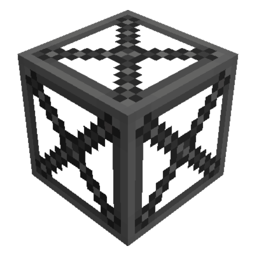

Advanced Pyrolyse Oven в собранной форме
Принцип работы:
Важно!
Машина в зависимости от тира Energy Hatch выполняет за раз несколько рецептов (LV - 2x, MV - 4x, HV - 6x .. Тир * 2)Расход энергии:
EU/t = EU/t (по рецепту) * количество одновременных рецептов * тир Energy Hatch / 2Пиролиз опилок
Для включения голограммы (подсказка при постройке) используйте Multiblock Machine Blueprint из мода TecTech, кликните им по контролеру мультиблока.
Важно!
Так так в структуре возможна установка только одного Output Hatch, возникает вопрос как выводить все жидкости (5 видов) из одного хэтча. Рекомендуется использовать многожильные трубы (Nonuple Fluid Pipe).

HSLA Machine Casing
Steel Pipe Casing
HSLA Frame Box